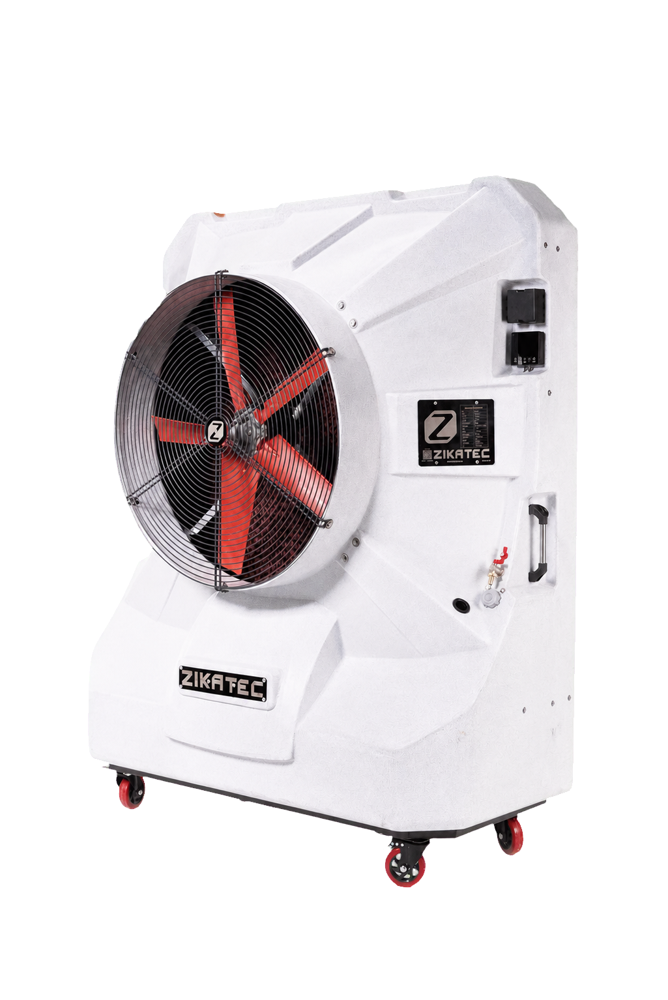
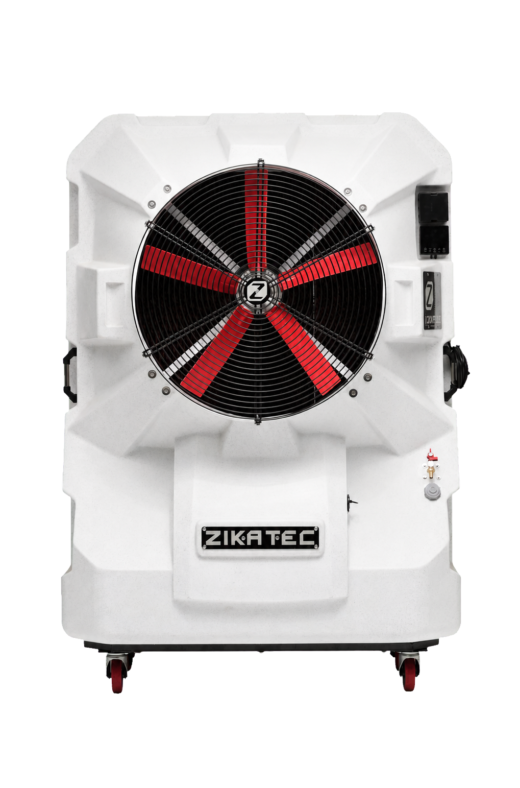
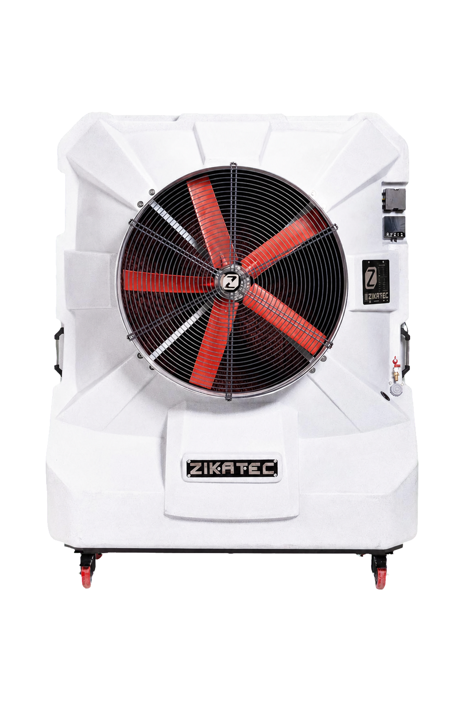
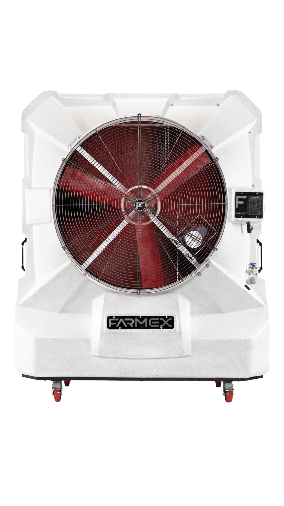

Kayışsız BLDC motor
Doğrudan tahrikli BLDC motor, kayış ve kasnak ihtiyacını ortadan kaldırır; enerji kullanımını ve mekanik bakım ihtiyacını azaltmaya yardımcı olur.
Endüstriyel evaporatif soğutma
Düşük tüketim. Taşınabilir kullanım. Güçlü hava debisi.
Zikatec evaporatif hava soğutucuları; fabrika, üretim alanı, depo ve geniş hacimlerde yüksek hava debisini düşük enerji tüketimi ve taşınabilir kullanımla bir araya getirir.

Neden evaporatif soğutma?
Fabrika, üretim ve depo gibi yüksek hacimli alanlarda gerekli noktalara güçlü hava akışı ulaştırmak gerekir. Evaporatif hava soğutucular, suyun doğal buharlaşmasından yararlanarak taze hava akışı sağlar. Uygunluk; iklim, nem, havalandırma, ısı yükü ve alan düzeni birlikte değerlendirilerek belirlenir.
Evaporatif soğutmayı daha iyi anlayınNeden Zikatec?
ZIKA serisi, yüksek hava ihtiyacını daha pratik yönetmek için mekanik sadelik, kontrol edilebilir debi ve taşınabilir yapıyı bir araya getirir.
Doğrudan tahrikli BLDC motor, kayış ve kasnak ihtiyacını ortadan kaldırır; enerji kullanımını ve mekanik bakım ihtiyacını azaltmaya yardımcı olur.
20 kademeli hız ayarı ve koruma sistemleri sayesinde hava debisi kullanım ihtiyacına göre kontrol edilebilir.
Mühendislik polimerinden üretilen gövde; nem, korozyon ve zorlu çalışma koşullarında uzun süreli kullanım için tasarlanmıştır.
Tekerlekli yapı, ihtiyaç değiştikçe cihazı farklı çalışma noktalarına taşıma ve tek bir sabit noktaya bağlı kalmadan soğutma esnekliği sağlar.
Su ve elektrik bağlantısı hazır olduğunda cihaz kısa sürede, uygun koşullarda yaklaşık 5 dakika içinde devreye alınabilir.
Taşınabilir ZIKA serisi, uygun uygulamalarda karmaşık kanal tesisatı gerektirmeden ihtiyaç duyulan noktaya hava üfleyebilir.
Kullanım alanları
Her uygulama; alan hacmi, açıklıklar, ısı yükü, nem, toz ve çalışma koşulları dikkate alınarak değerlendirilmelidir.
Fabrikalar, üretim holleri, atölyeler ve montaj alanları.
Depolar, lojistik tesisler, yükleme alanları ve hangarlar.
Hayvancılık tesisleri, kümesler ve teknik uygunluğu doğrulanan tarımsal çalışma alanları.
Restoran bahçeleri, etkinlik alanları ve geniş yarı açık işletme alanları.
Zika ürün ailesi
Model seçimi yalnızca metrekareye göre değil; hacim, havalandırma, ısı yükü ve ortam koşullarına göre yapılır.

Kompakt yapısıyla daha sınırlı endüstriyel alanlar ve bölgesel soğutma ihtiyaçları için.

Orta ölçekli üretim ve çalışma alanları için dengeli hava debisi.

Geniş hacimler ve yüksek hava ihtiyacı olan endüstriyel alanlar için.
Önemli: 350, 500 ve 700 model adları kesin metrekare kapsaması anlamına gelmez. Doğru model; tavan yüksekliği, açıklıklar, havalandırma, ısı yükü, nem, toz, su kalitesi ve elektrik koşulları değerlendirilerek belirlenir.
Teknik karşılaştırma
| Özellik | Zika 350 | Zika 500 | Zika 700 |
|---|---|---|---|
| Hava debisi | 22.000 m³/h | Yaklaşık 36.000 m³/h | Yaklaşık 45.000 m³/h |
| BLDC motor | 0,9 kW | 1,1 kW | 1,1 kW |
| Nominal akım | Yaklaşık 2,4 A | Yaklaşık 3,5 A | Yaklaşık 4 A |
| Kullanım yönelimi | Daha sınırlı alanlar ve bölgesel soğutma | Orta ölçekli üretim ve çalışma alanları | Geniş hacimler ve yüksek hava ihtiyacı |
| Hız kontrolü | 20 kademe | 20 kademe | 20 kademe |
| Tahrik yapısı | Kayışsız, doğrudan | Kayışsız, doğrudan | Kayışsız, doğrudan |
Şeffaf model seçimi
Kesin kapsama vaadi vermeden önce soğutma ihtiyacını etkileyen temel veriler birlikte ele alınır. Garanti ve servis koşulları teklif ve resmi garanti belgesinde açıkça belirtilir.
Sık sorulan sorular
Yanıtı ortam koşullarına bağlı olan konularda kesin vaat yerine teknik değerlendirme gerekir.
Alanımı değerlendirinEvaporatif soğutucu, sıcak havayı ıslak soğutma pedlerinden geçirerek suyun buharlaşma etkisiyle serinleten ve ortama taze hava veren bir sistemdir. Sonuç; dış hava sıcaklığına, bağıl neme ve hava değişimine göre farklılaşır.
Klima çoğunlukla kapalı ortam havasını soğutucu akışkanla çevirerek soğutur. Evaporatif soğutucu ise suyun buharlaşmasından yararlanır ve yüksek debide taze hava sağlar. Açık ve yarı açık endüstriyel alanlarda avantajlı olabilir; ancak her ortamda klimanın doğrudan alternatifi değildir.
Seçim yalnızca metrekareye göre yapılmaz. Alan hacmi, tavan yüksekliği, kapı açıklıkları, havalandırma, ısı yükü, nem, toz, su kalitesi ve elektrik koşulları birlikte değerlendirilir.
ZIKA 350 daha sınırlı alanlar ve bölgesel ihtiyaçlar, ZIKA 500 orta ölçekli çalışma alanları, ZIKA 700 ise geniş hacimler ve yüksek hava ihtiyacı için değerlendirilir. 350, 500 ve 700 adları kesin m² kapsaması değildir; nihai seçim alan verileriyle yapılır.
ZIKA serisinde BLDC motor gücü modele göre 0,9 kW ile 1,1 kW arasındadır. Gerçek toplam tüketim; seçilen hız, çalışma süresi, yardımcı bileşenler ve saha koşullarına göre değişir. Net hesap için kullanım senaryosu değerlendirilmelidir.
Kullanılabilir; ancak bağıl nem yükseldikçe evaporatif soğutma kapasitesi azalabilir. Beklenen sonuç bölgenin iklim verileri, çalışma saatleri ve alanın hava değişimi birlikte incelenerek değerlendirilmelidir.
Taşınabilir ZIKA serisi doğrudan hava üfleme için tasarlanmıştır ve birçok uygulamada kanal tesisatı gerektirmez. Yerleşim ve hava dağılımı ihtiyacı bazı projelerde farklı bir çözüm gerektirebilir.
Su ve elektrik bağlantısı hazırsa cihaz uygun koşullarda yaklaşık 5 dakika içinde devreye alınabilir. Saha hazırlığı gereken projelerde toplam kurulum süresi değişebilir.
Su sistemi, pompa, soğutma pedleri ve filtrelerin periyodik kontrolü gerekir. Bakım sıklığı; su kalitesi, toz, çalışma süresi ve ortam koşullarına göre belirlenir. Kayışsız doğrudan tahrik, bazı mekanik bakım kalemlerini azaltır.
Taşınabilir endüstriyel hava soğutucular; üretim noktaları, atölyeler, depolar, yükleme alanları ve uygun açık veya yarı açık işletme alanlarında kullanılabilir. Teknik uygunluk her alan için ayrıca değerlendirilmelidir.
Teknik ön değerlendirme
Alan türü, hacim ve çalışma koşullarını paylaşın. Talebiniz ekibimizin değerlendirme paneline kaydedilsin ve WhatsApp üzerinden de iletilebilsin.